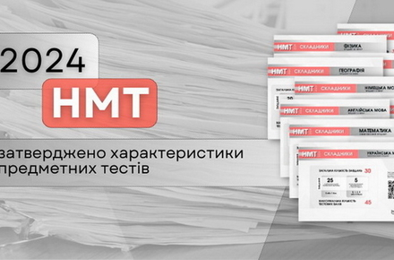

Майже 50% майбутніх водіїв, які самостійно готуються до здачі «теорії», у Житомирській області складають іспит з першого разу
Самопідготовка до «теорії»: майже 50 % майбутніх водіїв на Житомирщині складають іспит з першого разу.Про це 26 січня повідомляє регіональний сервісний центр ГСЦ МВС у Житомирській області.
«З 22 листопада минулого року майбутні водії отримали можливість складати теоретичний іспит без обов’язкового навчання в автошколі. За два місяці в сервісні центри МВС Житомирської області для першої спроби звернулися 188 кандидатів у водії. Раніше для отримання посвідчення водія вивчення правил дорожнього руху в акредитованому навчальному закладі було обов’язковим. Без відповідного свідоцтва кандидат у водії просто не допускався до іспиту в сервісному центрі МВС. Однак з 22 листопада 2023 року українці отримали вибір: або самостійно готуватись до теоретичного іспиту, або опанувати навчання в автошколі», - йдеться в повідомленні.
28 January 2024, 12:52

Для майбутніх водіїв Житомирської області доступний чат-бот з талонами на теоретичний або практичний іспити
Сервісний центр МВС запустив чат-бот з талонами для охочих скласти теоретичний або практичний іспити.Про це 26 січня повідомила пресслужба регіонального сервісного центру ГСЦ МВС в Житомирській області.
«Втілюємо інноваційні рішення, які роблять державні послуги ще більш зручнішими. Сервісні центри МВС успішно тримають курс на створення цифрової держави у смартфоні. Вже зараз громадянам доступні онлайн талони на послуги сервісних центрів МВС. Одна з найпопулярніших – складання практичного іспиту. Тепер отримати талон майбутнім кермувальникам стане ще простіше», - йдеться у повідомленні.
Відсьогодні Головний сервісний центр МВС запускає офіційний чат-бот у телеграмі – ТалонБот. Він створений для пошуку вільних талонів на складання практичного іспиту. У разі наявності система автоматично надсилатиме повідомлення кожні 10 хвилин в телеграм. Після отримання сповіщення про наявність вільного талона потрібно перейти за посиланням в Е-Запис та взяти талон на отримання послуги.
28 January 2024, 12:30

Про це 25 січня повідомляється на сайті Українського центру оцінювання якості освіти.
«Український центр оцінювання якості освіти затвердив загальні характеристики предметних тестів основного й додаткового блоків національного мультипредметного тесту 2024 року та схеми нарахування балів за виконання їх завдань. Також визначено кількість і форми тестових завдань із кожного предмета та час на їх виконання», - йдеться в повідомленні.
Так, тести з української мови, української літератури, історії України, біології, хімії та географії міститимуть по 30 завдань, із математики й фізики – 22 і 20 відповідно, а з іноземних мов (англійської, іспанської, німецької, французької) – по 32.
НМТ-2024: в Україні вже затвердили характеристики предметних тестів та схеми нарахування балів
В Україні вже затверджено загальні характеристики Національного мультипредметного тесту.Про це 25 січня повідомляється на сайті Українського центру оцінювання якості освіти.
«Український центр оцінювання якості освіти затвердив загальні характеристики предметних тестів основного й додаткового блоків національного мультипредметного тесту 2024 року та схеми нарахування балів за виконання їх завдань. Також визначено кількість і форми тестових завдань із кожного предмета та час на їх виконання», - йдеться в повідомленні.
Так, тести з української мови, української літератури, історії України, біології, хімії та географії міститимуть по 30 завдань, із математики й фізики – 22 і 20 відповідно, а з іноземних мов (англійської, іспанської, німецької, французької) – по 32.
27 January 2024, 09:41
Жителів Житомирського району попереджають про звуки вибухів упродовж дня та закликають не ігнорувати тривоги
У Житомирському районі протягом дня, 25 січня, буде чутно звуки вибухів.Про це о 9:10 повідомила Житомирська ОВА.
«Шановні жителі Житомирського району! Сьогодні впродовж дня буде чути вибухи. Звертаємо увагу на те, що хвилюватися не слід. Водночас закликаємо: під час повітряної тривоги не нехтуйте безпекою та прослідуйте в укриття», - йдеться в повідомленні.
26 January 2024, 18:37
Рекордну кількість електрокарів завезли минулого року до України: у Житомирську область – майже півтори тисячі
Рекордну кількість електрокарів — понад 37 тисяч — було імпортовано в Україну у 2023 році. Це у 4 рази більше, ніж у 2021 році.Аналітику під назвою «Рекордну кількість електрокарів ввезли в Україну у 2023 році. Які марки електроавто найчастіше обирають українці?» публікує 24 січня Opendatabot.
«Найпопулярнішими марками електроавтомобілів є Volkswagen, Tesla та Nissan. А Львівщина є лідером за кількістю реєстрацій таких автомобілів. Рекордні 37 953 електрокарів було ввезено в Україну за весь 2023 рік. Це у 4 рази більше, ніж у 2021 році, коли було імпортовано 8 996 електроавто», - йдеться у повідомленні.
25 January 2024, 09:38